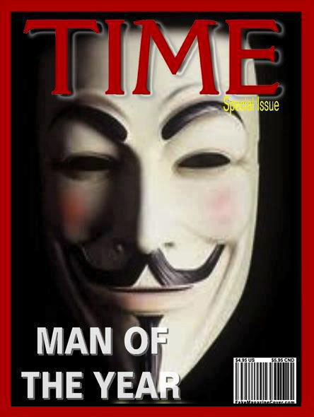
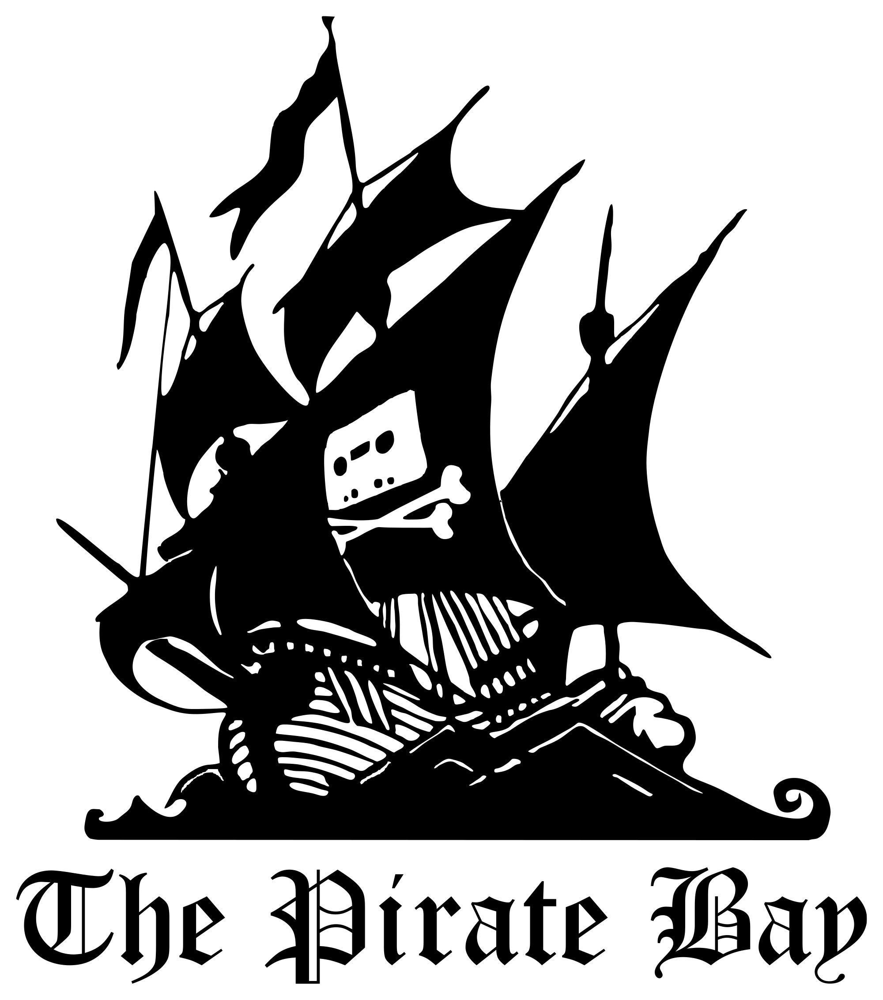
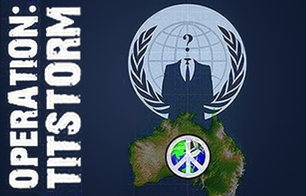
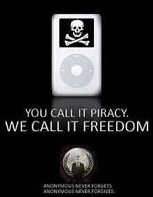
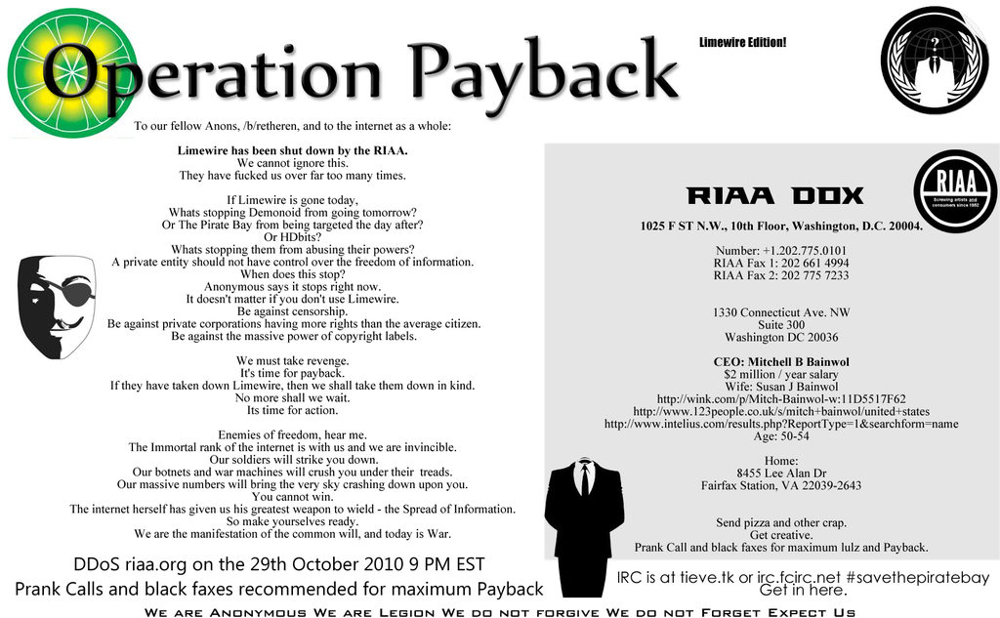
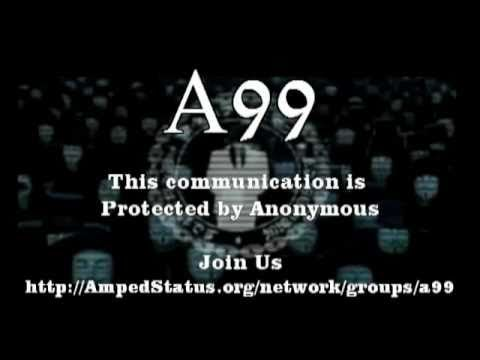
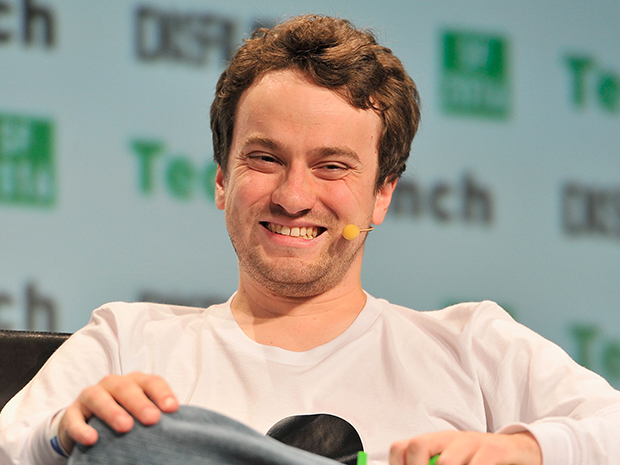
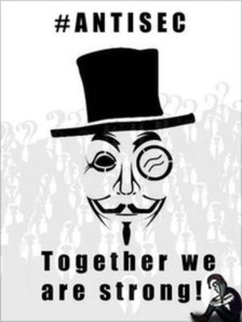
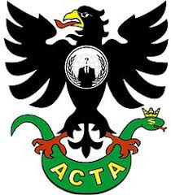
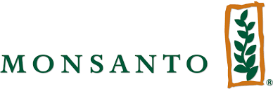

Przedstawienie
Anonymous – globalna, zdecentralizowana grupa aktywistów sprzeciwiająca się ograniczaniu wolności obywatelskich, korupcji, konsumpcjonizmowi, cenzurze, fair use, katolickiej etyce seksualnej, wpływowi Kościoła katolickiego na życie publiczne oraz łamaniu praw zwierząt. W 2012 roku magazyn „Time”zaliczył ich do 100 najbardziej wpływowych osób na świecie. Czasami określani są mianem „haktywistów”. 
Grupa Anonymous wywodzi się z obrazkowego forum 4chan.org, gdzie każdy może zamieścić swoją treść i jeśli nie jest zalogowanym użytkownikiem, to jego wpis występuje opatrzony nazwą „Anonymous”, czyli anonimowy. Również tam narodziła się idea maski Guy’a Fawkesa, w którą zaopatrzony był rysunkowy ludzik, symbolizujący tzw. epic fail, tj. epicka porażka, który był umieszczany jako komentarz w sytuacji, gdy któryś użytkownik powiedział coś absolutnie głupiego, bądź popełnił oczywisty błąd.
Akcje przypisywane grupie są wykonywane przez pojedyncze osoby lub grupy, które działają pod wspólnym szyldem Anonymous. Wieloetapowe i zaplanowane akcje Anonymous noszą nazwę operacji (np. operacja Payback oraz operacja Paperstorm). Niektóre działania hakerów mają charakter żartobliwy, inne pomagają społeczeństwom żyjącym w państwach autorytarnych.
Anonymous na wszystkich zamieszkanych kontynentach wykonali SQL injection i DDoS przy użyciu botneta i programu Low Orbit Ion Cannon. Niektórzy ludzie działający jako Anonymous współpracowali z grupą hakerów LulzSec. Powstało wiele krajowych grup Anonymous, np. AnonPoland, AnonSlovenia czy angielska ATeam. Szczyt popularności osiągnęli w styczniu 2012 roku.
Do komunikacji pomiędzy sobą, mediami i społeczeństwem używają swoich własnych stron, Facebooka, Twittera, Pastebin (i jego odpowiednika – Anonpaste), YouTube oraz Encyclopedia Dramatica. Dane pozyskane przez hakerów bywają zamieszczane na The Pirate Bay.
Historia Działalności
Lata 2006-2008 | Początek Działalności
Pierwsza aktywność Anonymous, miała miejsce w 2006 roku – były związana z serwisem Habbo, którego użytkownicy znajdują się w wirtualnym hotelu. W ustalonym terminie setki członków Anonymous wybrało taki sam avatar (czarnoskóry w szarym garniturze z afro) i zablokowało dostęp do pływalni, podając innym użytkownikom, że jest ona zainfekowana przez HIV. Postacie sterowane przez Anonymous uformowały także wieloosobową swastykę.
Także w tym roku Anonymous wykradli kody źródłowe programów Norton Internet Security 2006 i Norton AntiVirus 2006. Opublikowali go sześć lat później jako odwet za aresztowania członków LulzSec.
W kwietniu Mitchell Henderson zastrzelił się z powodu zgubienia swojego iPoda. W jednej z  kondolencji na odpowiedniej stronie na Myspace wielokrotnie pojawił się ten sam błąd: napisano „an hero” zamiast „a hero” (ang. bohater). Niepoprawne wyrażenie stało się memem internetowym będącym synonimem zabawnego samobójstwa (szczyt popularności osiągnęło podczas wakacji w 2008 roku). Na 4chanie pojawiły się parodie kondolencji, które jednak usunięto. Na to zareagowali Anonymous i /b/tardzi. Na stronie Myspace z kondolencjami zamieszczono linki do drastycznych zdjęć i filmów. W rocznicę śmierci nastolatka, członek Anonymous zadzwonił do jego rodziców i udawał jego ducha (prank call).
Hal Turner Campaign – seria prank call do show telewizyjnego prowadzonego przez neonazistę Hala Turnera. Miały również miejsce ataki na jego stronę, a po przegranej sprawie sądowej Turner przestał prowadzić swój program.
Przez część 2007 roku nadal trwały działania Anonymous w związku z Habbo i Turnerem.
W latach 2008-2009 aktywny był Project Chanology mający na celu walkę ze scjentologią. Miały miejsce zarówno ataki internetowe jak i demonstracje w miejscach publicznych.
kondolencji na odpowiedniej stronie na Myspace wielokrotnie pojawił się ten sam błąd: napisano „an hero” zamiast „a hero” (ang. bohater). Niepoprawne wyrażenie stało się memem internetowym będącym synonimem zabawnego samobójstwa (szczyt popularności osiągnęło podczas wakacji w 2008 roku). Na 4chanie pojawiły się parodie kondolencji, które jednak usunięto. Na to zareagowali Anonymous i /b/tardzi. Na stronie Myspace z kondolencjami zamieszczono linki do drastycznych zdjęć i filmów. W rocznicę śmierci nastolatka, członek Anonymous zadzwonił do jego rodziców i udawał jego ducha (prank call).
Hal Turner Campaign – seria prank call do show telewizyjnego prowadzonego przez neonazistę Hala Turnera. Miały również miejsce ataki na jego stronę, a po przegranej sprawie sądowej Turner przestał prowadzić swój program.
Przez część 2007 roku nadal trwały działania Anonymous w związku z Habbo i Turnerem.
W latach 2008-2009 aktywny był Project Chanology mający na celu walkę ze scjentologią. Miały miejsce zarówno ataki internetowe jak i demonstracje w miejscach publicznych.
Operacja Titstorm
Na luty 2010 przypadła operacja Titstorm. Była wyrazem sprzeciwu wobec planów australijskiego rządu dotyczących usunięcia z sieci niektórych materiałów pornograficznych (pornografia animowana, sceny z kobietami o małym biuście lub wytryskiem u kobiet). Hakerzy zamieścili pornografię na stronie premiera Australii (był nim wówczas Kevin Rudd). Zablokowali też strony rządu i parlamentu, a wielu jego członków i urzędników dostało tysiące e-maili z treściami pornograficznymi. Nawiązywano żartobliwe rozmowy telefoniczne, wysyłano humorystyczne faksy.
Operacja Payback
Została ona przeprowadzona jako odwet za przeprowadzenie ataków DDoS na strony torrent. Propagatorzy działań pirackich przeprowadzili ataki na przeciwników takich działań. Wywołana została fala ataków przeciwko organizacjom chroniącym prawa autorskie, zapobiegające piractwu, kancelariom prawnym i osobom prywatnym.
Po ujawnieniu depesz amerykańskiej dyplomacji przez WikiLeaks, w listopadzie i grudniu 2010 roku, organizatorzy rozpoczęli ataki DDoS na strony banków, które wycofały swoje infrastruktury bankowe z WikiLeaks.
W 2010 roku kilka spółek z Bollywoodu zatrudniło Aiplex Software w celu przeprowadzenia ataków DDoS na internetowe, które nie odpowiedziały na wezwania do usunięcia nielegalnych treści (filmów opublikowanych przy złamaniu praw autorskich) znajdujących się na nich. W odwecie piraccy aktywiści stworzyli Operację Payback we wrześniu 2010 roku. Pierwotnym planem operacji był bezpośredni atak na Aiplex Software, lecz kilka godzin przed planowanym atakiem strona została już zaatakowana przez innego aktywistę. W związku z tym Operacja Payback dokonała ataków na strony innych organizacji, które surowo egzekwowały prawa autorskie, czyli Motion Picture Association of America (MPAA) oraz Międzynarodowa Federacja Przemysłu Fonograficznego, powodując zakłócanie działania tych stron na łącznie 30 godzin. W ciągu następnych dwóch dni Operacja Payback zaatakowała mnóstwo stron stowarzyszonych z MPAA, m.in. Recording Industry Association of America (RIAA) i Brytyjski Przemysł Fonograficzny. Zaatakowane zostały również organizacje prawnicze takie jak ACS:Law, Davenport Lyons, Dunlap, Grubb & Weaver.
RIAA
Dnia 26 października 2010 nakazano, aby program LimeWire> zaprzestał nielegalnego transferu i dystrybucji plikami; przyczyną tego nakazu była przegrana rozprawa sądowa wytoczona przez RIAA w sprawie roszczeń dotyczących naruszenia praw autorskich. Organizacja nie była usatysfakcjonowana treścią nakazu, więc oznajmiła zamiar kontynuacji procesu w celu uzyskania odszkodowania za straty poniesione przez działalność LimeWire. W odwecie członkowie operacji Payback zapowiedzieli atak na stronę internetową RIAA, do którego doszło 29 października 2010 roku. Po ataku strony riaa.org oraz riaa.com były nieosiągalne w Europie. Tego samego dnia została również zaatakowana strona główna Operacji Payback - członkowie musieli zmienić adres z tieve.tk na anonops.net. Wszystkie ataki tego dnia wykonano metodą DDoS.
Około 28 października 2010 członkowie Operacji Payback stworzyli nową stronę internetową w celu koordynowania protestów z różnych stron świata, aby zwrócić uwagę ludzi na ich sprawę. Protesty odbyły się 5 listopada, celowo w dzień spisku prochowego, z którym to grupa Anonymous jest związana poprzez wykorzystanie w wizerunku maski Guya Fawkesa. Jednym z elementów protestu był atak na United States Copyright Office, po którym FBI rozpoczęło śledztwo.
9 listopada 2010 roku Operacja Payback tymczasowo przerwała ataki. Przerwa trwała około cztery miesiące, kończąc się z początkiem marca 2011 roku - doszło wtedy do ataku na stronę BMI, jednej z trzech organizacji zbiorowego zarządzania prawami autorskimi lub prawami pokrewnymi non-profit na rynku utworów muzycznych w USA. Kolejnym działaniem grupy był drugi atak DDoS na organizację RIAA.
Operacja Empire State Rebellion
Od początku Arabskiej Wiosny Anonymous hakowali strony reżimów, przeciwko którym wystąpiło społeczeństwo.Operacja Empire State Rebellion – w marcu 2011 roku Anonymous zaczęli ujawniać wiadomości e-mail pozyskane z Bank of America. Ich zdaniem miały pokazywać one korupcję urzędników.
Operacja Sony
Pod koniec 2009 roku George Hotz ogłosił, że zhakuje PlayStation 3. Swoje działania dokumentował na blogu, a cel osiągnął w styczniu 2011 roku. Producent (firma Sony) pozwał hakera, na co Anonymous odpowiedzieli operacją Sony. Wykradziono nazwiska, adresy, adresy e-mail, daty urodzenia i hasła z loginami do systemu PlayStation dla ok. 100 mln kont. Upubliczniono także dane z 2007 roku dotyczące 13 tys. kart kredytowych spoza USA i ok. 11 tys. rachunków bankowych z Europy. W sumie hakerzy poznali dane o 10 mln kartach kredytowych. Sony bezpośrednie straty oszacowało na więcej niż 170 mln $. Ponemon Institute, cytowany przez Forbes, podaje, że szkody (głównie te związane ze stratą klientów) wyniosły 318 $ za każde konto, o którym wyciekły informacje.
Również w maju haktywiści na stronie PBS zamieścili żart, jakoby Tupac Shakur mieszkał wtedy w Nowej Zelandii. W następnym miesiącu w Malezji zablokowano dostęp do WikiLeaks i The Pirate Bay. W odpowiedzi Anonymous zhakowali 91 rządowych witryn.
Zaproszenie do operacji | Operacja AntiSec
Od 4 czerwca 2011 trwa operacja AntiSec, w której uczestniczą połączone siły LulzSec, ludzi działających jako Anonymous oraz hakerów nieutożsamiających się z żadną z tych grup. Od jej początku wiele działań hakerów, niezależnie od ich motywacji, zostało dodatkowo zakwalifikowanych jako jej część. Operację zapowiedziano 4 czerwca na twitter'owym kanale The Lulz Boat: „So gather round, this is a new cyber world and we're starting it together. There will be bigger targets, there will be more ownage. #ANTISEC” (Sabu, założyciela LulzSec i byłego Anonymous, FBI aresztowało 3 dni później). 8 czerwca LulzSec na stronie Black & Berg Cybersecurity Consulting zamieścili swoje logo, wygrywając zawody w hakowaniu, za co firma ta przyznała im 10 tys. $. 11 czerwca hakerzy ujawnili ok. 26 tys. e-miali i haseł do ich kont z pornograficznej strony, pron.com, a 2 dni później dane o 200 tys. kont z serwisów tego samego typu. W tym samym dniu ujawniono część haseł użytkowników z oficjalnej strony Senatu USA. Również w czerwcu zablokowano kilka brazylijskich stron rządowych, zhakowano strony CIA i zdobyto dane o 62 tys. kont i hasłach z MediaFire, wykradziono tajne dokumenty, adresy e-mail i hasła do ich kont z Arizona Department of Public Safety. Hakerzy poznali adresy IP związane z Sony, Viacom, Disney, EMI i NBC Universal, tajną stronę US Navy oraz 500 MB danych wewnętrznych AT&T (w tym tych dotyczących LTE Advanced, 90 tys. numerów telefonów używanych przez IBM, Nowego iPada, 200 tys. kont z hackforums.net, 12 tys. z NATO online bookstore, 500 tys. z Battlefield Heroes, 50 tys. z forum o grach i 29 z Priority Investigations). Anonymous zdobyli także dane FBI, np. te o lokalizacji jej placówek.
Następny miesiąc przyniósł ujawnienie m.in. 2800 członków paramilitarnej organizacji Black Eagles i haseł 27 administratorów Apple. Z serwerów Monsanto wyciekły dane o 2500 osobach związanych z biotechnologią, z czego 250 stanowili pracownicy koncernu. Włamano się na stronę The Sun, na której ogłoszono fikcyjny zgon jej właściciela, Ruperta Murdocha. Upubliczniono również 67 tys. e-maili, z czego 53 tys. należało do armii, hakerzy zdobyli dostęp do gigabajta dokumentów NATO. Haktywiści ukradli 214 tys. rekordów z informacjami osobistymi i danymi bankowymi 96 tys. klientów.
Sukcesem zakończyły się ataki hakerów o kryptonimach Military Meltdown Monday (zdobyto ok. 90 tys. adresów e-mail i haseł do ich kont z serwerów współpracowników Pentagonu), Turkish Takedown Thursday (po tym jak zablokowano 1000 tureckich witryn, zaatakowano jeszcze 74 rządowe strony), Fuck FBI Friday (udostępniono 1GB danych Vanguard Defense Industries, w tym te dotyczące drona ShadowHawk i zapowiedzi pierwszego w historii obniżenia ratingu USA) czy Shooting Sheriffs Saturday (wykradziono 10GB danych o policji). Zrzuty baz danych z 20 włoskich uniwersytetów również ujrzały światło dzienne. Pod koniec miesiąca zablokowano strony 77 organizacji pilnujących porządku publicznego.
We wrześniu 2011 roku hakerzy wykradli nazwiska, adresy domowe i daty urodzenia ok. 25 tys. policjantów z Austrii. W październiku zdobyto m.in. 1000 nazwisk i haseł członków Boston Police Patrolmen's. W listopadzie Anonymous ujawnili 38 tys. wiadomości ze skrzynki e-mail agenta specjalnego Computer and Technology Crime Hightech Response Team. W grudniu Anonymous ujawnili personalia policjantów, którzy starli się z przedstawicielami ruchu Okupuj Wall Street. Także w tym miesiącu hakerzy, w ramach LulzXmas, wykradli ze Stratfor adresy internetowe, adresy e-mail i hasła. Wyciekły dane o 860 tys. kont, należących m.in. do ludzi związanych z policją, wywiadem wojskowym, obroną narodową, NATO, armią USA. Adresy byłego wiceprezydenta Dana Quayle'a i byłego sekretarza stanu Henry’ego Kissingera również znalazły się w sieci. Dane o 75 tys. kart kredytowych klientów „cienia CIA” posłużyły hakerom do przekazania 1 mln $ (według FBI – 700 tys. $) – jak sami twierdzą – na cele charytatywne, zamieszczając skany potwierdzeń przelewów z kont, którym przyporządkowane były karty kredytowe o wykradzionych numerach.
5 mln wiadomości e-mail z serwerów Stratfor zaczęto publikować w lutym 2012 roku na Wikileaks. Z jednej z nich wynikało, że ciała bin Ladena nie pochowano w Oceanie Indyjskim, a przetransportowano samolotem CIA do Dover w stanie Delaware, a następnie do Instytutu Patologii Sił Zbrojnych w Bethesda. Ośrodek zamknięto 4 miesiące po śmierci terrorysty. W 2012 roku również wiele ataków hakerskich odbyło się w ramach operacji AntiSec, niezależnie od ich motywacji.
Operacja Darknet
Źródłem ataku hakerów stał się serwis hostingowy Freedom Hosting, operujący w anonimowej sieci Tor. Dzięki wyeliminowaniu go Anonimowi "zdjęli" z Internetu ponad 40 stron z dziecięcą pornografią, w tym witrynę Lolita City, największą z jej podobnych, na której znajdowało się aż 100GB tego typu filmów. Co więcej, hakerzy poszli dalej i opublikowali w sieci dane 1589 zarejestrowanych użytkowników tej strony.
Operacja Cartel
Na październik 2011 roku zaplanowano także operację Cartel. Miała ona na celu wykradzenie danych o największym meksykańskim kartelu narkotykowym Los Zetas, jednak została przerwana po porwaniu jednego z założycieli AnonMexico. Kartel wypuścił hakera pod warunkiem niepublikowania nazwisk skorumpowanych urzędników, adwokatów i policjantów. Zagroził zabiciem 10 niewinnych osób za ujawnienie każdego nazwiska. Na przełomie lat 2011 i 2012 hakowano także strony Iranu i Izraela.
Operacja Blitzkrieg
2 maja 2011 roku Anonymous zapowiedzieli operację Blitzkrieg, skierowaną przeciwko faszystom i nacjonalistom. W pierwszym tygodniu stycznia 2012 roku spełnili swoje groźby – awariom (i wskutek tego wyłączeniom) uległy fora internetowe czy witryny z gadżetami dla faszystów. Upubliczniono dziesiątki tysięcy imion, nazwisk, adresów zamieszkania, kodów pocztowych, adresów e-mail i numerów telefonów domowych nacjonalistów. W lutym ujawniono powiązania Rona Paula z neonazizmem.
Również w pierwszym tygodniu stycznia z serwerów kalifornijskiej policji wykradziono 2500 haseł (w tym 300 należących do Police Chief) oraz 1076 adresów e-mail z ich hasłami.
Operacja Megaupload
Od 19 stycznia 2012 roku trwa operacja Megaupload. W 2 połowie miesiąca wielokrotnie były blokowane strony Departamentu Sprawiedliwości USA, FBI, strony wytwórni Universal Music Group oraz organizacji RIAA i Motion Picture Association of America w odwecie za zablokowanie serwisu megaupload.com i aresztowanie jego właściciela.
Anonimowi Przeciw ACTA
W tym samym miesiącu miały również miejsce ataki internautów związane z SOPA, PIPA i ACTA na korporacyjne i państwowe strony USA, Francji, Polski, Irlandii i Słowenii. Grupa ujawniła adresy mailowe oraz loginy i hasła niektórych pracowników polskiego rządu, a także dane o życiu prywatnym i pracy części jego polityków.
Aktywność hakerów zwróciła uwagę opinii publicznej na treść ACTA, co skutkowało dobrowolnym blackout-em (zacienieniem lub zamknięciem) ponad 800 polskich portali. W związku ze wzrostem popularności Anonymous wielu jego sympatyków i członków pobrało zmienioną wersję LOIC, które zawierało trojana bankowego Zeusa. Oryginalna, promowana przez Anonymous wersja LOIC go nie zawierała.
26 stycznia UE i jej 22 państwa członkowskie podpisały ACTA, jednak w kwietniu Parlament Europejski ją ostatecznie odrzucił. Zapowiedziano, że głosowania nad SOPA i PIPA będą miały miejsce dopiero po rozwiązaniu problemów z nimi związanych.
W lutym 2012 w związku z akcją przeciw ACTA atakom uległy strony CIA. Oprócz tego hakerzy upublicznili kodowaną telekonferencję pomiędzy FBI a Scotland Yardem dotyczącą właśnie ataków hakerskich. W 2 połowie lutego haktywiści zaatakowali kilka stron Federal Trade Commission. Anonymous ujawnili również liczącą 28 tys. pozycji listę członków – rządzącej w Czechach – Obywatelskiej Partii Demokratycznej wraz z ich adresami zamieszkania.
W odpowiedzi na lutowe aresztowania Interpolu Anonymous zhakował jego strony, a także kolumbijskiego ministerstwa obrony, chilijskiej biblioteki narodowej oraz koncernu energetycznego Endesa.
14 marca miała miejsce premiera Anonymous-OS. Tego samego dnia w ramach protestów przeciwko ACTA, PIPA i SOPA> z DigitalPlayground (strona z pornografią) wykradziono 40 tys. numerów kart kredytowych i 72 tys. adresów e-mail. 82 z nich należały do pracowników rządów lub armii.
Inne Akcje Grupy Anonymous w 2012r.
W lutym i marcu haktywiści oskarżali Izrael o stosowanie terroru wobec Palestyny.
1 marca hakerzy utożsamiający się z Anonymous, ponownie włamali się na serwery Monsanto, oskarżając ją o działanie na szkodę 9000 farmerów (za sprawą pozwów patentowych) i dodawanie trucizn do żywności.
Marcowe aresztowania członków LulzSec spotkały się z kontr-działaniami hakerów. Upubliczniono kod źródłowy Norton AntiVirus 2006, który wykradziono 6 lat wcześniej, a na stronie New York Ironworks (uzbrajającej New York City Police Department) zamieszczono odszyfrowane loginy, hasła i e-maile użytkowników witryny. Do aresztowań przyczyniła się również Panda Security – Anonymous na jej stronie opublikowali własną wiadomość, wykradziono dziesiątki adresów e-mail wraz z hasłami, a także hasła administratorów i ich loginy.
4 marca DDoS uległo American Israel Public Affairs Committee.
3 dni później haktywiści dopisali w internetowym oficjalnym wydaniu preambuły do węgierskiej konstytucji:
„Dyktatorzy są tylko przejściowym wynaturzeniem historii i powinni mieć się na baczności, ponieważ obywatele mają prawo kiedykolwiek obalić tyranię i zbuntować się przeciw swoim dyktatorom.’’
Podano także informacje o 50% podwyżce dla informatyków odpowiedzialnych za zabezpieczenie zaatakowanej strony i ich prawie do emerytury w wieku 31 lat. W ten sam dzień haktywiści zaatakowali stronę Watykanu. Zrobili już to rok wcześniej, jednak tym razem skutecznie. Wiadomość dla Kościoła brzmiała:
„Dzisiaj Anonymous postanowił dokonać oblężenia waszej strony w odpowiedzi na doktryny, liturgie i absurdalne, anachroniczne przykazania, które propaguje i szerzy na świecie wasza organizacja.’’
Część ludzi działających jako Anonymous sprzeciwia się zarówno niektórym obecnym jak i przeszłym działaniom Stolicy Apostolskiej. Watykan potwierdził ataki. Podczas II podróży apostolskiej Benedykta XVI do Ameryki Łacińskiej AnonMexico zhakowali strony pielgrzymek, twierdząc, że mają one zabarwienie polityczne.

Następnego dnia mężczyzna pod szyldem Anonymous wykradł 10 000 rekordów z British Pregnancy Advisory Service o kobietach poddających się aborcji. Nie zdążył ich jednak upublicznić, gdyż aresztowała go policja. W następnym miesiącu w odwecie hakerzy próbowali się włamać na stronę BPAS 2500 razy.
W dniach 16-26 marca Anonymous blokowali węgierską stronę Monsanto.
AnonymousChina zaatakowali 485 witryn rządu Chińskiej Republiki Ludowej i upublicznili wykradzione z nich dane. Na zhakowanych stronach napisano jak oszukać cenzorów i wiadomość: „Drogi rządzie Chin, nie jesteś wieczny, dziś padają strony internetowe, jutro upadnie zgniły reżim.’’
11 kwietnia hakerzy ogłosili, że pokonali Wielką Ścianę Ogniową Chin i zdobyli dostęp do wojskowych i geopolitycznych danych.
8 kwietnia, w związku z planami zaostrzenia kontroli w Internecie, DDoS dotknął brytyjski Home Office.
Również tego dnia Anonymous ogłosili, że weszli w posiadanie e-maili premiera Tunezji świadczących o łamaniu przez jej rząd praw człowieka. Rządząca Islamska Partia Odrodzenia
stwierdziła, że print-screen'y e-maili sfabrykowano.
Operacja Defense ma zapobiec wejściu w życie Cyber Intelligence Sharing and Protection Act. 10 kwietnia w jej ramach zhakowano stronę Boeinga.
Internauci powtórzyli także żart z 2009 roku polegający na oddawaniu jak największej liczby głosów w internetowej sondzie mającej wyłonić 100 najbardziej wpływowych osób świata. Tym razem na pierwszym miejscu umieszczono Anonymous, a na drugim Erika Martina, założyciela Reddit.
11 kwietnia hakerzy z Malicious Security zadeklarowali wsparcie dla Anonymous.
20 kwietnia Anonymous zaatakował stronę Formuły 1 w związku z Grand Prix w Bahrajnie, z powodu aktów przemocy, do jakich dochodziło w tym kraju.
W ramach operacji Levenson (będącej protestem przeciw śledztwu związanego z hakowaniem telefonów) atakowano witryny Information Commissioner's Office.
Hakerzy blokowali niemieckie rządowe strony wspomagając Ruch Oburzonych.
W 2 połowie maja Anonymous DDoSowali niektóre strony rządu Indii, gdyż ten blokował dostęp do Vimeo i The Pirate Bay.
21 maja Anonymous w ramach akcji Monday Mail Mayhem ujawnili 1,7GB e-maili z amerykańskiego Bureau of Justice Statistics. Miały one pokazywać korupcję w rządzie.
W lipcu Anonymous zablokowało setki stron z pornografią dziecięcą i upubliczniło dane setek ich użytkowników.
Działalność Anonymous w Polsce
31 marca AnonPoland zorganizowało FuckGovFriday, czyli sprzeciw wobec INDECT i – według hakerów – destruktywnemu wpływowi Kościoła, mediów, polityków, lekarzy, sądów i szkół. Blokowano strony ZUSu i NFZ; upubliczniono zrzuty baz zawierające m.in. imiona, nazwiska pracowników prokuratur i Politechniki Gdańskiej oraz ich hasła dostępowe do kont. Na zhakowanych stronach umieszczano cytat z Benjamina Franklina: „Ci którzy rezygnują z wolności w imię bezpieczeństwa, nie zasługują na żadne z nich”. 2 tygodnie później polska policja i MSWiA ogłosiły, że dłużej nie będą pracować nad INDECT.
2 kwietnia Anonymous i TrollSec ujawnili dane członków Obywatelskiej Partii Demokratycznej; upubliczniono czeskie odpowiedniki numerów PESEL, daty urodzenia, notatki o członkostwie w partii, adresy skrzynek poczty elektronicznej, loginy i hasła dostępu do wewnętrznych stron ugrupowania oraz numery telefonów komórkowych (w tym 3 numery premiera Petra Nečasa). Atak miał być reakcją na lekceważenie opinii publicznej w Czechach.7 kwietnia na forum polskich użytkowników Tora pojawiła się oferta sprzedaży dostępu do ponad 2 milionów kont z kilkunastu serwisów (głównie z peb.pl, ale też z wizaz.pl, maxior.pl, mpcforum i cba.pl) za 10 mln bitcoin (ok. 150 mln zł). Dostęp do części kont prawdopodobnie kupili Anonymous.